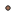

<!doctype html>
<html lang="en">
    <head>
        <meta charset="utf-8">
        <meta http-equiv="X-UA-Compatible" content="IE=edge">
        <meta name="viewport" content="initial-scale=1,user-scalable=no,maximum-scale=1,width=device-width">
        <meta name="mobile-web-app-capable" content="yes">
        <meta name="apple-mobile-web-app-capable" content="yes">
        <link rel="stylesheet" href="css/leaflet.css">
        <link rel="stylesheet" href="css/qgis2web.css"><link rel="stylesheet" href="css/fontawesome-all.min.css">
        <link rel="stylesheet" href="css/leaflet-measure.css">
        <style>
        html, body, #map {
            width: 100%;
            height: 100%;
            padding: 0;
            margin: 0;
        }
        </style>
        <title>Sub_Region Goluj Avg. RF</title>
    </head>
    <body>
        <div id="map">
        </div>
        <script src="js/qgis2web_expressions.js"></script>
        <script src="js/leaflet.js"></script>
        <script src="js/leaflet.rotatedMarker.js"></script>
        <script src="js/leaflet.pattern.js"></script>
        <script src="js/leaflet-hash.js"></script>
        <script src="js/Autolinker.min.js"></script>
        <script src="js/rbush.min.js"></script>
        <script src="js/labelgun.min.js"></script>
        <script src="js/labels.js"></script>
        <script src="js/leaflet-measure.js"></script>
        <script src="data/SRegionGoluj_1.js"></script>
        <script src="data/AvgRF_mm_2.js"></script>
        <script>
        var map = L.map('map', {
            zoomControl:true, maxZoom:28, minZoom:1
        }).fitBounds([[14.263321790909805,36.073775319716106],[15.05695729931421,37.48647198265238]]);
        var hash = new L.Hash(map);
        map.attributionControl.setPrefix('<a href="https://github.com/tomchadwin/qgis2web" target="_blank">qgis2web</a> &middot; <a href="https://leafletjs.com" title="A JS library for interactive maps">Leaflet</a> &middot; <a href="https://qgis.org">QGIS</a>');
        var autolinker = new Autolinker({truncate: {length: 30, location: 'smart'}});
        var measureControl = new L.Control.Measure({
            position: 'topleft',
            primaryLengthUnit: 'meters',
            secondaryLengthUnit: 'kilometers',
            primaryAreaUnit: 'sqmeters',
            secondaryAreaUnit: 'hectares'
        });
        measureControl.addTo(map);
        document.getElementsByClassName('leaflet-control-measure-toggle')[0]
        .innerHTML = '';
        document.getElementsByClassName('leaflet-control-measure-toggle')[0]
        .className += ' fas fa-ruler';
        var bounds_group = new L.featureGroup([]);
        function setBounds() {
        }
        map.createPane('pane_OSMStandard_0');
        map.getPane('pane_OSMStandard_0').style.zIndex = 400;
        var layer_OSMStandard_0 = L.tileLayer('http://tile.openstreetmap.org/{z}/{x}/{y}.png', {
            pane: 'pane_OSMStandard_0',
            opacity: 1.0,
            attribution: '<a href="https://www.openstreetmap.org/copyright">© OpenStreetMap contributors, CC-BY-SA</a>',
            minZoom: 1,
            maxZoom: 28,
            minNativeZoom: 0,
            maxNativeZoom: 19
        });
        layer_OSMStandard_0;
        map.addLayer(layer_OSMStandard_0);
        function pop_SRegionGoluj_1(feature, layer) {
            var popupContent = '<table>\
                    <tr>\
                        <th scope="row">ID</th>\
                        <td>' + (feature.properties['ID'] !== null ? autolinker.link(feature.properties['ID'].toLocaleString()) : '') + '</td>\
                    </tr>\
                    <tr>\
                        <th scope="row">Sub_Region</th>\
                        <td>' + (feature.properties['Sub_Region'] !== null ? autolinker.link(feature.properties['Sub_Region'].toLocaleString()) : '') + '</td>\
                    </tr>\
                    <tr>\
                        <th scope="row">Sub_Reg_Co</th>\
                        <td>' + (feature.properties['Sub_Reg_Co'] !== null ? autolinker.link(feature.properties['Sub_Reg_Co'].toLocaleString()) : '') + '</td>\
                    </tr>\
                    <tr>\
                        <th scope="row">Region_Cod</th>\
                        <td>' + (feature.properties['Region_Cod'] !== null ? autolinker.link(feature.properties['Region_Cod'].toLocaleString()) : '') + '</td>\
                    </tr>\
                    <tr>\
                        <th scope="row">Region</th>\
                        <td>' + (feature.properties['Region'] !== null ? autolinker.link(feature.properties['Region'].toLocaleString()) : '') + '</td>\
                    </tr>\
                </table>';
            layer.bindPopup(popupContent, {maxHeight: 400});
        }

        function style_SRegionGoluj_1_0() {
            return {
                pane: 'pane_SRegionGoluj_1',
                opacity: 1,
                color: 'rgba(35,35,35,1.0)',
                dashArray: '',
                lineCap: 'butt',
                lineJoin: 'miter',
                weight: 1.0, 
                fillOpacity: 0,
                interactive: true,
            }
        }
        map.createPane('pane_SRegionGoluj_1');
        map.getPane('pane_SRegionGoluj_1').style.zIndex = 401;
        map.getPane('pane_SRegionGoluj_1').style['mix-blend-mode'] = 'normal';
        var layer_SRegionGoluj_1 = new L.geoJson(json_SRegionGoluj_1, {
            attribution: '',
            interactive: true,
            dataVar: 'json_SRegionGoluj_1',
            layerName: 'layer_SRegionGoluj_1',
            pane: 'pane_SRegionGoluj_1',
            onEachFeature: pop_SRegionGoluj_1,
            style: style_SRegionGoluj_1_0,
        });
        bounds_group.addLayer(layer_SRegionGoluj_1);
        map.addLayer(layer_SRegionGoluj_1);
        function pop_AvgRF_mm_2(feature, layer) {
            var popupContent = '<table>\
                    <tr>\
                        <th scope="row">pointid</th>\
                        <td>' + (feature.properties['pointid'] !== null ? autolinker.link(feature.properties['pointid'].toLocaleString()) : '') + '</td>\
                    </tr>\
                    <tr>\
                        <th scope="row">RF_mm</th>\
                        <td>' + (feature.properties['RF_mm'] !== null ? autolinker.link(feature.properties['RF_mm'].toLocaleString()) : '') + '</td>\
                    </tr>\
                </table>';
            layer.bindPopup(popupContent, {maxHeight: 400});
        }

        function style_AvgRF_mm_2_0() {
            return {
                pane: 'pane_AvgRF_mm_2',
                radius: 2.4000000000000004,
                opacity: 1,
                color: 'rgba(35,35,35,1.0)',
                dashArray: '',
                lineCap: 'butt',
                lineJoin: 'miter',
                weight: 1,
                fill: true,
                fillOpacity: 1,
                fillColor: 'rgba(164,113,88,1.0)',
                interactive: true,
            }
        }
        map.createPane('pane_AvgRF_mm_2');
        map.getPane('pane_AvgRF_mm_2').style.zIndex = 402;
        map.getPane('pane_AvgRF_mm_2').style['mix-blend-mode'] = 'normal';
        var layer_AvgRF_mm_2 = new L.geoJson(json_AvgRF_mm_2, {
            attribution: '',
            interactive: true,
            dataVar: 'json_AvgRF_mm_2',
            layerName: 'layer_AvgRF_mm_2',
            pane: 'pane_AvgRF_mm_2',
            onEachFeature: pop_AvgRF_mm_2,
            pointToLayer: function (feature, latlng) {
                var context = {
                    feature: feature,
                    variables: {}
                };
                return L.circleMarker(latlng, style_AvgRF_mm_2_0(feature));
            },
        });
        bounds_group.addLayer(layer_AvgRF_mm_2);
        map.addLayer(layer_AvgRF_mm_2);
            var title = new L.Control();
            title.onAdd = function (map) {
                this._div = L.DomUtil.create('div', 'info');
                this.update();
                return this._div;
            };
            title.update = function () {
                this._div.innerHTML = '<h2>Sub_Region Goluj Avg. RF</h2>';
            };
            title.addTo(map);
        var baseMaps = {};
        L.control.layers(baseMaps,{' Avg.RF_mm': layer_AvgRF_mm_2,' S/Region Goluj': layer_SRegionGoluj_1,"OSM Standard": layer_OSMStandard_0,},{collapsed:false}).addTo(map);
        setBounds();
        </script>
    </body>
</html>
